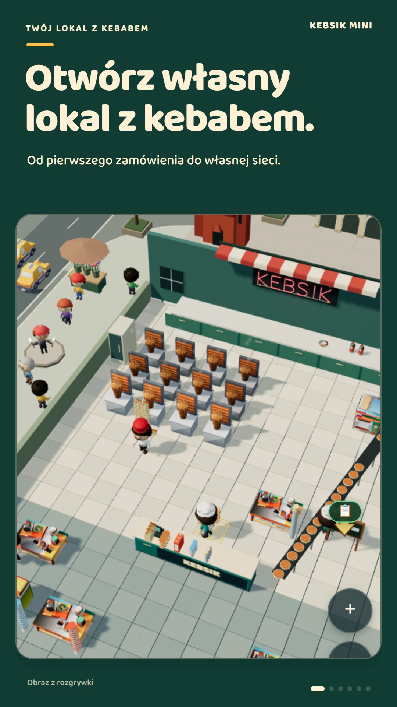
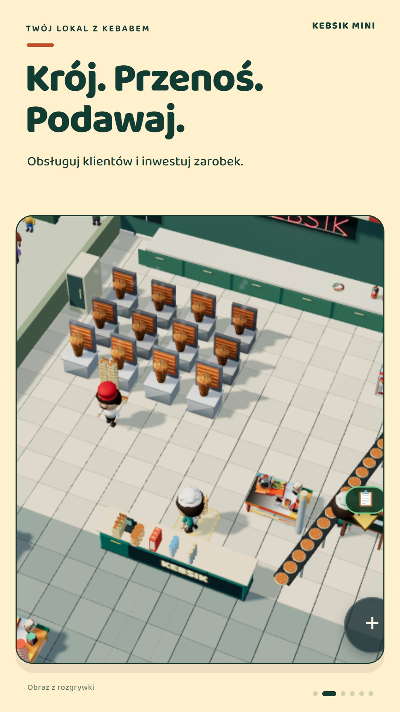
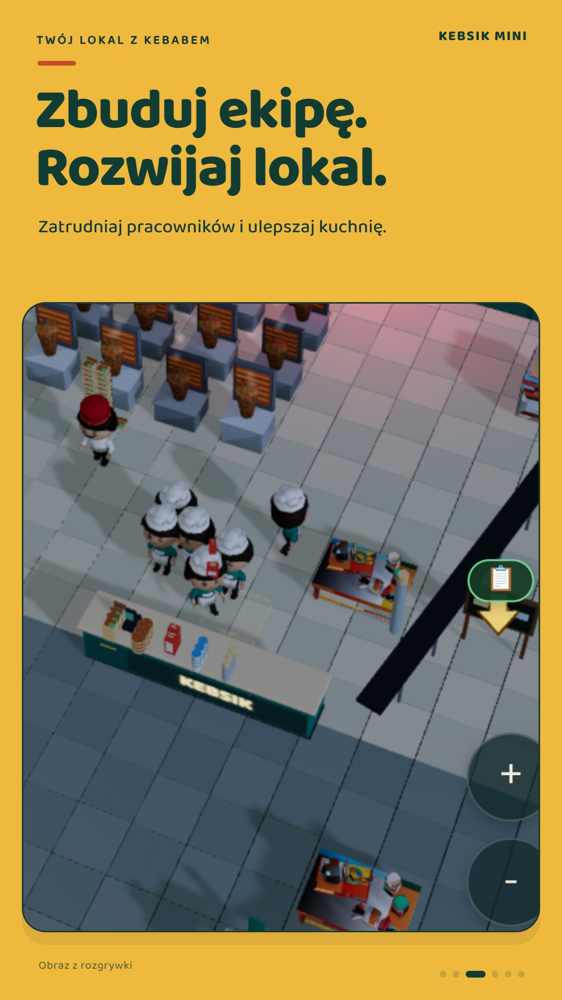
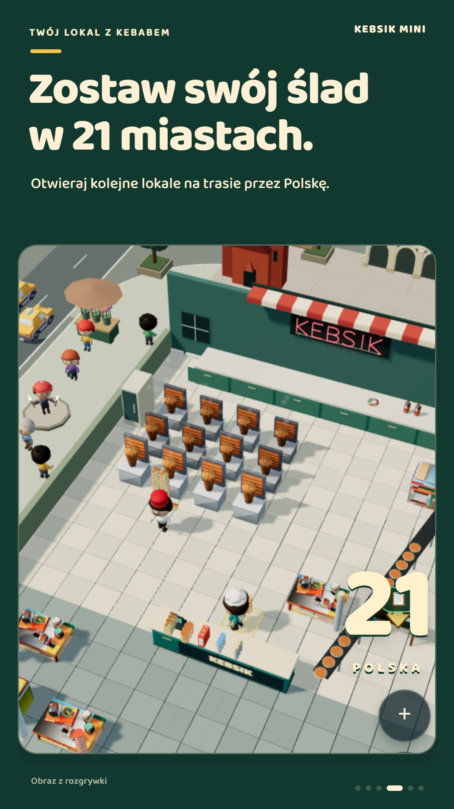
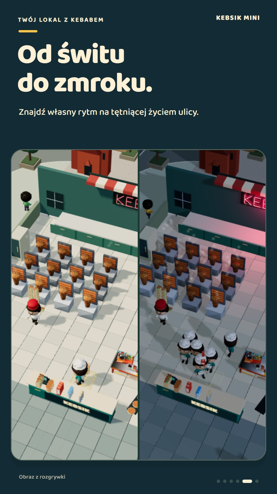
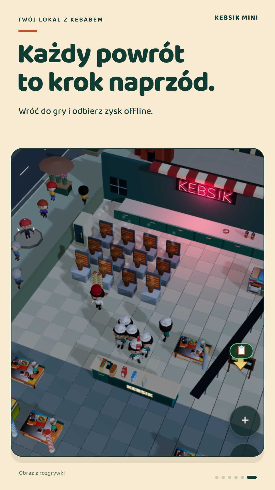

Restauracyjna przygoda idle
Mały lokal. Wielkie plany.
Krój, podawaj i rozwijaj własny lokal z kebabem. Zatrudniaj pracowników i otwieraj kolejne lokale na trasie przez 21 polskich miast.
Dołącz do testu na Androidzie
Dołącz do testu na Androidzie
Wersja 0.1.53 jest dostępna w zamkniętym teście. Użyj tego samego konta Google w grupie, na stronie testu i w Sklepie Play.
App not available?
Jeśli widzisz „App not available”, sprawdź członkostwo w grupie i konto Google. Po dołączeniu dostęp może pojawić się z opóźnieniem. Jeśli jesteś w teście wewnętrznym, najpierw go opuść.





